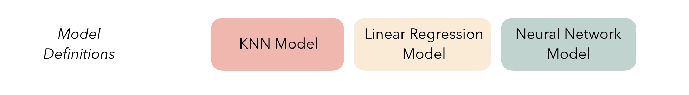
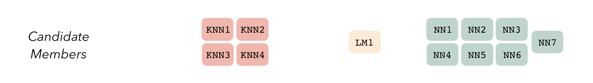
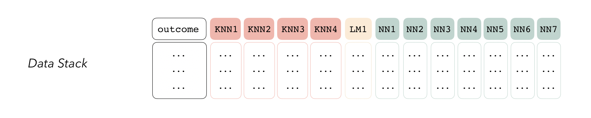
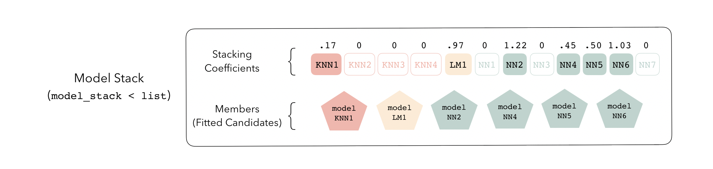

Initialize a Stack
stacks.RdThis help-file describes both the initialization function in the package as well as the general principles behind the package.
The stacks() function initializes a data_stack object. Principally,
data_stacks are just
tibbles, where the first column gives the true outcome in the assessment set,
and the remaining columns give the predictions from each candidate ensemble
member. (When the outcome is numeric, there’s only one column per candidate
member. For classification, there are as many columns per candidate
member as there are levels in the outcome variable minus 1.) They also bring
along a few extra attributes to keep track of model definitions, resamples,
and training data.
See the Details section below for more discussion of the package, generally.
stacks(...)
Arguments
| ... | Additional arguments. Currently ignored. |
|---|
Value
A data_stack object.
Details
At the highest level, ensembles are formed from model definitions. In this package, model definitions are an instance of a minimal workflow, containing a model specification (as defined in the parsnip package) and, optionally, a preprocessor (as defined in the recipes package). Model definitions specify the form of candidate ensemble members.

To be used in the same ensemble, each of these model definitions must
share the same resample. This
rsample rset object, when paired
with the model definitions, can be used to generate the tuning/fitting
results objects for the candidate ensemble members with tune.

The package will sometimes refer to sub-models. An ensemble member is a sub-model that has actually been selected (and possibly trained) for use in the ensemble (via nonzero stacking coefficients, usually) that is not regarded as resulting from a specific model definition, where-as a sub-model is an untrained candidate ensemble member.
Candidate members first come together in a data_stack object through
the add_candidates() function. Principally, these objects are just
tibbles, where the first column gives
the true outcome in the assessment set, and the remaining columns give
the predictions from each candidate ensemble member. (When the outcome
is numeric, there’s only one column per candidate ensemble member.
Classification requires as many columns per candidate as there are
levels in the outcome variable.) They also bring along a few extra
attributes to keep track of model definitions.

Then, the data stack can be evaluated using blend_predictions() to
determine to how best to combine the outputs from each of the candidate
members.
The outputs of each member are likely highly correlated. Thus, depending on the degree of regularization you choose, the coefficients for the inputs of (possibly) many of the members will zero out—their predictions will have no influence on the final output, and those terms will thus be thrown out.

These stacking coefficients determine which candidate ensemble members
will become ensemble members. Candidates with non-zero stacking
coefficients are then fitted on the whole training set, altogether
making up a model_stack object.

This model stack object, outputted from fit_members(), is ready to
predict on new data!
At a high level, the process follows these steps:

The API for the package closely mirrors these ideas. See the basics
vignette for an example of how this grammar is implemented!
See also
Other core verbs:
add_candidates(),
blend_predictions(),
fit_members()